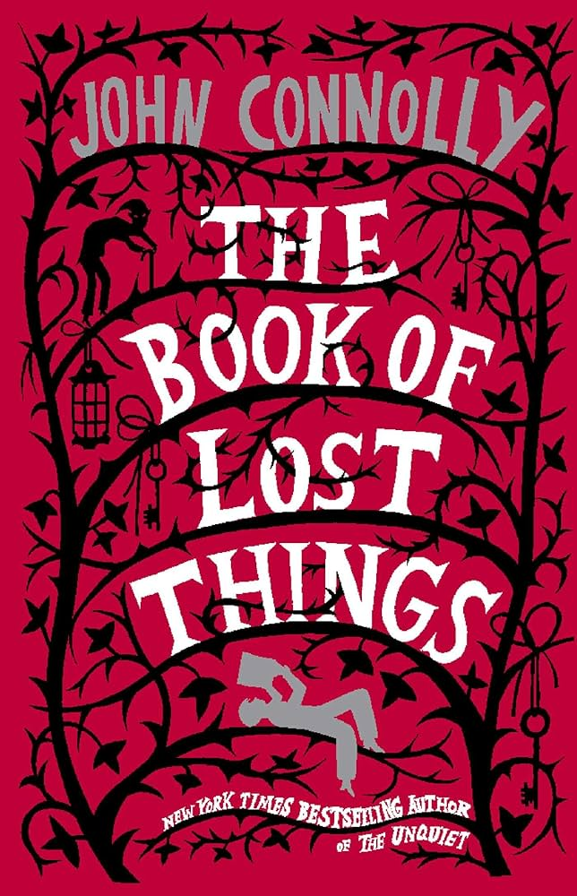

In Defense of Audiobooks
“Audiobooks don’t count as reading.”
I've had this conversation a few times. Because I love to talk about books, naturally I end up occasionally saying "Oh I'm listening to x" or I'm reading y." Most people are blasé and uncaring, but some people get very riled up. Especially so when I refer to listening to an audiobook as "reading". I had one person go so far as to tell me I actually had not read a book if I listened to it (despite being able to discuss its content in detail).
Quick jargon guide
- Comprehension: understanding and retaining the meaning of what you’ve read or heard.
- Learning styles: the debunked idea that people learn best through one specific sensory mode (visual, auditory, etc.).
- Modality: the format or channel through which information is delivered: print, audio, braille, etc.
- Prosody: the rhythm, stress, and intonation of spoken language: the performance layer that audio adds to text.
The argument against audiobooks
When people say “audiobooks don’t count,” they usually mean one of the following:
1. Audiobooks are not as good for comprehension as print. This is the most common argument. It is often based on personal experience (I don’t understand as well when I listen) or a general intuition that reading is more “active” than listening. The implication is that if you want to truly understand a book, you need to read it on the page.
2. Audiobooks are not “real” reading. This is a more ideological claim. It is often rooted in a romanticised view of reading as a solitary, tactile, and visual experience. The implication is that if you listen to a book, you haven’t really read it, and therefore haven’t fully engaged with the text.
3. Audiobooks are for lazy people who don’t want to put in the effort to read. This is a more judgmental stance. It assumes that listening is a shortcut, a way to consume books without the discipline or attention that reading requires. The implication is that if you listen to a book, you are taking the easy way out and not really engaging with the material.
4. Audiobooks don't allow for easy re-reading a line, or pausing to reflect. This is a practical concern. While it is true that audio is linear and rewinding can be cumbersome, many audiobook platforms offer features like bookmarks, speed control, and chapter navigation to mitigate these issues.

Where does this mindset come from?
It is a mix of cultural bias, personal preference, and a lack of awareness of the research. The cultural bias is strong; we have been conditioned to see print as the default and superior form of reading. Personal preference plays a role; some people simply prefer the tactile experience of holding a book. But the lack of awareness of the research is what really fuels the stigma against audiobooks.
Many of us were also falsely taught about learning styles - more on that myth shortly. This misconception has contributed to the belief that listening to a book is inferior to reading it. You've probably heard it referenced casually in conversations about education or study habits: "Oh, I'm more of a visual learner."
This mindset also comes from a romanticised view of reading: a woman sitting in a café, steam rising from her cup, turning pages slowly, falling into the story in front of her, or a man sitting in a park near chess players, leafing through a dog-eared paperback. The idea of reading as a physical, visual, and solitary act is deeply ingrained in our culture, and the deviation of just looking like you are listening to Taylor Swift's latest album is incompatible with that image.
But so far this is all my opinion and personal experience.
The Cognitive Science of Reading and Listening
Before getting into findings, a quick note on sources. The studies below are published as academic manuscripts: researchers submit them, independent experts in the same field review the methods and conclusions, and only then are they accepted by a journal. Peer review is not perfect, but it is one of the best quality filters we have. So when I cite these papers, I’m referring to work by people who have demonstrable expertise, whose claims have been scrutinized and validated by other specialists before publication.
The most frequently cited finding in this field comes from Daniel Willingham, a cognitive scientist at the University of Virginia. He has studied how reading and listening compare at the level of comprehension.[1]
“For most purposes, listening and reading are more or less the same thing.”
Both routes deliver language to the brain and require the cognitive work of constructing meaning, making inferences, and holding a narrative thread. Different modalities do not equal different comprehension.
Key Research Findings
A 2015 study by Rogowsky, Calhoun, and Tallal tested this directly by assigning adults to read, listen to, or simultaneously read and listen to sections of a nonfiction book. After testing their comprehension, researchers found no statistically significant difference across conditions. The people who listened understood the material as well as the people who read it on paper.[2]
“Results failed to show a statistically significant relationship between learning style preference (auditory, visual word) and learning aptitude (listening comprehension, reading comprehension).”
This result has been replicated and extended. A 2019 study in the Journal of Neuroscience by Deniz, Nunez-Elizalde, Huth, and Gallant used fMRI imaging to compare brain activity during reading and listening. They found that the semantic representations (the actual meaning the brain constructs) were remarkably similar regardless of whether the input came through the eyes or the ears. These are different sensory pathways leading to the same destination.[3]
Essential Caveats
There are certain limitations to this equivalence. For dense, technical, or structurally complex material (such as a statistics textbook, a legal contract, or a philosophy paper with nested arguments), reading on the page has distinct advantages, including cross referencing tables, images and text; slowing down as needed, and you can physically annotate the pages. Audio is inherently linear, and the process of rewinding is often clunky. That does not mean your 6th reread of Babel must be in print lest you fail to follow the plot.
So, for narrative prose (including novels, memoirs, popular nonfiction, and essays), the evidence is clear. Listening is reading.
The “learning styles” myth
“It is also natural and appealing to think that all people have the potential to learn effectively and easily if only instruction is tailored to their individual learning styles.”
Part of the confusion comes from the persistent myth that people are wired to learn in one specific way: visual, auditory, kinaesthetic, or whatever flavour of learning style taxonomy is currently in vogue.
© Ken Reid. All rights reserved. An example of aural learning in practice.
This idea has been tested extensively and does not hold up. Pashler, McDaniel, Rohrer, and Bjork published a comprehensive review in 2008 concluding that there is virtually no rigorous evidence supporting the idea that matching instruction to a student’s preferred learning style improves outcomes. The concept is appealing because it flatters individual identity, but the evidence for it simply doesn’t exist.[4]
“The contrast between the enormous popularity of the learning-styles approach within education and the lack of credible evidence for its utility is, in our opinion, striking and disturbing.”
What does exist is evidence that different tasks are better suited to different modalities. Learning to tie a knot benefits from demonstration. Learning vocabulary benefits from repetition and context, regardless of whether it’s spoken or written. And narrative comprehension works well in both print and audio, because the cognitive task is the same: understanding a story.
The implication is that audiobooks are not an accommodation for a type of learner. They are a legitimate format for a type of content.
Then, there's the obvious prejudice
When someone says “audiobooks don’t count,” they are implicitly constructing a hierarchy of reading. Print on top. E-readers in the middle, grudgingly tolerated. Audiobooks at the bottom, for the lazy or the illiterate.
That hierarchy excludes people with dyslexia, for whom decoding printed text is effortful, slow and frustrating. People with visual impairments who physically cannot read print. People with ADHD, chronic fatigue, motor disabilities that make holding a book painful, or any of the dozens of conditions that make sustained visual reading difficult or impossible.
Which means audiobooks (as well as other formats e.g. braille, large print) make reading possible for many people.
When you tell someone that their audiobook “doesn’t count,” you are not making a claim about comprehension. You are making a claim about legitimacy. You are saying that access to literature should be gatekept by the physical act of scanning printed words with your eyes, and anyone who can’t or doesn’t do it that way hasn’t really participated.
That is a form of prejudice known as ableism (discrimination against people with disabilities).
The irony is that many of the people making this argument are the same people who say they want more people to read. They want higher literacy rates, broader access to ideas, richer public discourse. They just don’t want it to count if it came through earbuds.
Matching the format to the context
None of this means format is irrelevant. It means format is a practical choice, not a moral one.
I switch formats deliberately and constantly. During my Detroit commute, audiobooks turned 120 minutes of daily driving into 120 minutes of reading. I can also read while cooking dinner, or walking my dog. It allows me to stack my reading time efficiently alongside the daily slog.
When I need to annotate, cross-reference, or sit with a difficult argument, I read print. Not because print is inherently superior, but because the task demands random access, and audio is sequential.
© Ken Reid. All rights reserved. Time well spent.
It isn’t about which format is better in some abstract, universal sense, instead it’s about which format fits the material, the context, and the reader.
Some books are better on audio
I’ll go further: in my experience, some books are genuinely, measurably improved by audio.
When you watch TV, a film, go see a play, do you prefer to sit at home and read the script, or experience the performance as intended? The same principle applies to audiobooks. The audio format ADDS information for our ears to receive and brain to process. Inflection, tone, pacing, and emotion are all conveyed through the narrator's performance.
Off to Be the Wizard by Scott Meyer has fantastic voice acting on the Audible version. Luke Daniels’ performance adds comedic timing, character distinction, and energy that you simply cannot get from the printed page. While the book is funny on paper (and I have both read the physical copy and listened to the audiobook), the performance elevates it to another level.
Off to Be the Wizard by Scott Meyer (cover art).
The same applies to anything with a strong narrator: memoirs read by the author, full-cast productions, or novels where the voice actor brings genuine craft to the performance.
And then there is the emotional dimension. John Connolly’s The Book of Lost Things hits hard in any format, but I remember listening to it and being so thoroughly wrecked by the ending that I had to stop what I was doing. I don’t recommend listening to the audiobook:- especially the ending - in public, lest you cry while doing your grocery shop in Costco. The narrator’s voice added a layer of emotional weight that I’m not certain I would have felt as viscerally on the page. Prosody matters, because tone, pacing, and breath are not decorative: they are part of how we process language and emotion.

The Book of Lost Things by John Connolly (cover art).
If you’ve never experienced a book through a truly excellent narrator, you are missing an entire dimension of storytelling.
The real question
The question was never “does this format count?” It was always “did you absorb the material?”
Did the story move you? Did the argument make you think? Did you come away with something you didn’t have before? If yes, it doesn’t matter whether the words arrived through your eyes, your ears, or your fingertips on a braille display.
The fetishisation of print as the only real reading is a cultural bias, not an empirical claim. It is propped up by aesthetics (the smell of books! the feel of pages!), identity (I’m a reader), and a quiet snobbery that confuses medium with merit.
Read in whatever format lets you actually access books, ideas, and joy. Read on paper. Read on a screen. Listen on your commute. Switch between them mid-book if that’s what works, or listen while you read in print (this is surprisingly popular!). The goal is to transfer the story from the mind of the author to yours, the transmission medium is as irrelevant as the color of the ink or the volume of the audiobook. So, in short:
Whether you listen or I read, we both learn the same lessons and go on the same adventure.
Common questions
Is audiobook comprehension really as good as print?
For narrative content, yes. Multiple studies show no meaningful difference in comprehension between reading and listening for stories and popular nonfiction.
What about retention over time?
The evidence suggests retention is comparable for both formats in the short and medium term. What matters more than modality is engagement, attention, and whether you actually process what you’re consuming.
Are there any books you wouldn’t listen to?
Anything I need to annotate heavily, cross-reference, or pause and re-read paragraph by paragraph. Academic texts, dense philosophy, statistics: those I read visually. But that’s a practical choice about the task, not a judgement about the format.
Is it okay to switch formats mid-book?
Yes. I do it all the time. Start on Kindle at home, switch to Audible in the car, switch back for the ending. Whatever keeps you in the book.
References
- Willingham, D. T. (2016). Is listening to audiobooks really the same as reading? Daniel Willingham — Science & Education. danielwillingham.com
- Rogowsky, B. A., Calhoun, B. M., & Tallal, P. (2015). Matching learning style to instructional method: Effects on comprehension. Journal of Educational Psychology, 107(1), 64–78. doi:10.1037/a0037478
- Deniz, F., Nunez-Elizalde, A. O., Huth, A. G., & Gallant, J. L. (2019). The representation of semantic information across human cerebral cortex during listening versus reading is invariant to stimulus modality. Journal of Neuroscience, 39(39), 7722–7736. doi:10.1523/JNEUROSCI.0675-19.2019
- Pashler, H., McDaniel, M., Rohrer, D., & Bjork, R. (2008). Learning styles: Concepts and evidence. Psychological Science in the Public Interest, 9(3), 105–119. doi:10.1111/j.1539-6053.2009.01038.x